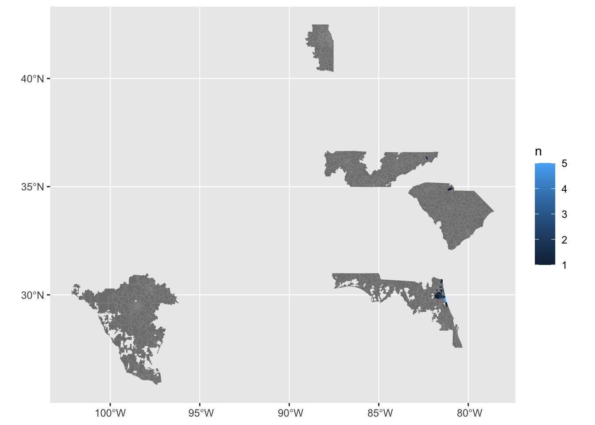

library(tidyverse)
survey_data <- read_csv("People of the Guana Peninsula Survey_October 3, 2022_12.36.csv")
library(janitor)
# get the first row as the col names
survey_data_q <-
survey_data %>%
row_to_names(row_number = 1) %>%
slice(-1)Analysis of coastal heritage survey data from the People of the Guana Peninsula, Florida
# Q1: Have you visited the GTM Research Reserve?
survey_data_q %>%
select(`Have you visited the GTM Research Reserve?`) %>%
ggplot() +
aes(`Have you visited the GTM Research Reserve?`) +
geom_bar()# Q2: When you come to the Guana Tolomato Matanzas (GTM) Research Reserve, what kind of activities do you engage in?
survey_data_q %>%
select(kind_of_activities = `When you visit the GTM Research Reserve, what kind of activities do you engage in? Check all that apply. - Selected Choice`) %>%
separate_rows(kind_of_activities, sep = ",") %>%
group_by(kind_of_activities) %>%
summarise(n = n()) %>%
drop_na() %>%
ggplot() +
aes(reorder(kind_of_activities,
n), n) +
geom_col() +
coord_flip()
# Q3: Have you heard of these cultures that used this area through time?
survey_data_q %>%
# select the columns relevant to this question
select(starts_with("Have you heard of these cultures that used this area through time?")) %>%
pivot_longer(everything()) %>%
# remove some of the text that is reptitive here
mutate(name = str_remove_all(name, "Have you heard of these cultures that used this area through time\\? Please select the option that best describes your relationship with these cultures\\. - ")) %>%
# omit NA
drop_na() %>%
# omit spaces at the start and end of the text
mutate(value = str_squish(value)) %>%
# order a factor so that the plot has logically ordered bars
mutate(value = fct_relevel(value,
c("I identify as a descendant of this culture.",
"I am familiar with this culture.",
"I have heard of this culture.",
"I have never heard of this culture."))) %>%
# tally up
group_by(name, value) %>%
summarise(n = n()) %>%
# plot
ggplot() +
aes(value, n) +
geom_col() +
coord_flip() +
facet_wrap( ~ name)
# Q4: How familiar are you with these types of cultural resources?
survey_data_q %>%
# select the columns relevant to this question
select(starts_with("How familiar are you with these types of cultural resources?")) %>%
pivot_longer(everything()) %>%
# remove some of the text that is reptitive here
mutate(name = str_remove_all(name, "How familiar are you with these types of cultural resources\\? - ")) %>%
# omit NA
drop_na() %>%
# omit spaces at the start and end of the text
mutate(value = str_squish(value)) %>%
# order a factor so that the plot has logically ordered bars
mutate(value = fct_relevel(value,
c("Extremely familiar",
"Very familiar",
"Slightly familiar",
"Moderately familiar",
"Not familiar at all"))) %>%
# tally up
group_by(name, value) %>%
summarise(n = n()) %>%
# plot
ggplot() +
aes(value, n) +
geom_col() +
coord_flip() +
facet_wrap( ~ name)# Q5: Have you encountered any of these cultural resources while at the GTM Research Reserve?
survey_data_q %>%
select(starts_with("Have you encountered any of these cultural resources while at the GTM Research Reserve?")) %>%
pivot_longer(everything()) %>%
mutate(name = str_remove_all(name, "Have you encountered any of these cultural resources while at the GTM Research Reserve\\? - ")) %>%
drop_na() %>%
mutate(value = str_squish(value)) %>%
mutate(value = fct_relevel(value,
c("Never Encountered",
"Rarely Encountered",
"Frequently Encountered",
"Unsure"))) %>%
group_by(name, value) %>%
summarise(n = n()) %>%
# plot
ggplot() +
aes(value, n) +
geom_col() +
coord_flip() +
facet_wrap( ~ name)
Demographics
Age Range
survey_data_q %>%
select(starts_with("Age Range")) %>%
pivot_longer(everything()) %>%
mutate(name = str_remove_all(name, "Age Range")) %>%
# should I drop NA's here?
drop_na() %>%
mutate(value = str_squish(value)) %>%
mutate(value = fct_relevel(value,
c("18 - 29",
"30 - 39",
"40 - 49",
"50 - 59",
"60 - 69",
"70 - 79",
"80 or older"))) %>%
group_by(name, value) %>%
summarise(n = n()) %>%
# plot
ggplot() +
aes(value, n) +
geom_col() +
coord_flip() +
facet_wrap( ~ name)
Ethnicity
Gender Identity
survey_data_q %>%
select(starts_with("Gender Identity - Selected Choice")) %>%
pivot_longer(everything()) %>%
mutate(name = str_remove_all(name, "Gender Identity - Selected Choice")) %>%
drop_na() %>%
mutate(value = str_squish(value)) %>%
mutate(value = fct_relevel(value,
c("Female",
"Male",
"Prefer not to say"))) %>%
group_by(name, value) %>%
summarise(n = n()) %>%
# plot
ggplot() +
aes(value, n) +
geom_col() +
coord_flip() +
facet_wrap( ~ name)(Gender Identity - Prefer to self-identify as: - Text)
highest degree or level of schooling